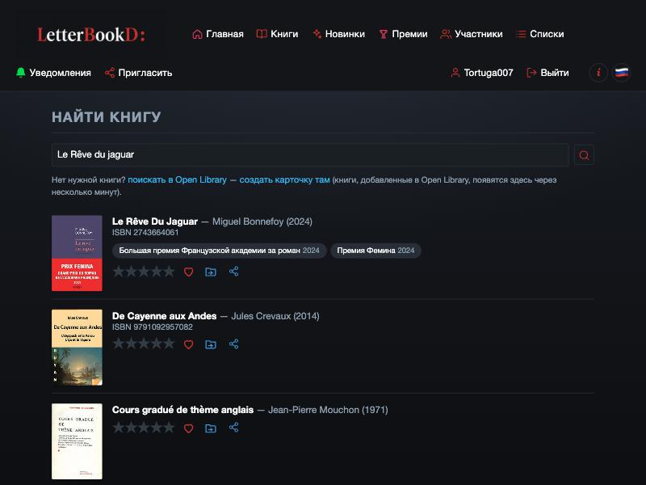

Книги — Поиск
Зачем это нужно: Найти книгу в общем каталоге клуба. Если её там нет, предложи её через Open Library: она появится в каталоге примерно через несколько минут.

Как это устроено
Введи начало названия, имя автора или ISBN в строку поиска и нажми Enter (или значок лупы). Пример: «Le Rêve du jaguar» выводит карточку книги с пометкой «Премия Фемина / Гран-при Французской академии 2024». Если книги нет, пройди по ссылке «искать в Open Library», затем «создать карточку там»: Open Library передаст карточку в letterbookd примерно через несколько минут.
Цепочки действий
Каждая строка — это триггер в интерфейсе, модалка или форма, которые он открывает, и результат.
| Триггер | Модалка / Поля | Эффект |
|---|---|---|
| Строка поиска | Текстовое поле (название, автор или ISBN). Отправка: Enter или клик по лупе. | Перезагружает страницу с найденными результатами. В адресе появляется параметр «?q=…», чтобы поделиться поиском. |
| Ссылка «искать в Open Library» / «создать карточку там» | Форма Open Library (вне letterbookd). | Создаёт карточку на Open Library; letterbookd подтянет её в течение нескольких минут. Обновление поиска покажет новую книгу. |
| Значок сердца (строка результата) | — | Добавляет книгу в системный список «Избранное» или убирает её оттуда. |
| Значок папки (строка результата) | Открывает окно «Добавить в список» (см. ниже). | Добавляет книгу в выбранный список или в новый, созданный на лету. |
| Значок «поделиться» / треугольник (строка результата) | Открывает окно «Предложить эту книгу». | Отправляет приватное предложение участнику твоего клуба с необязательным сообщением (до 280 символов). |
| Серые звёзды (строка результата) | Клик по звёздам открывает полную форму оценки на карточке книги. | Переводит на карточку книги, где ждёт твоя оценка. |